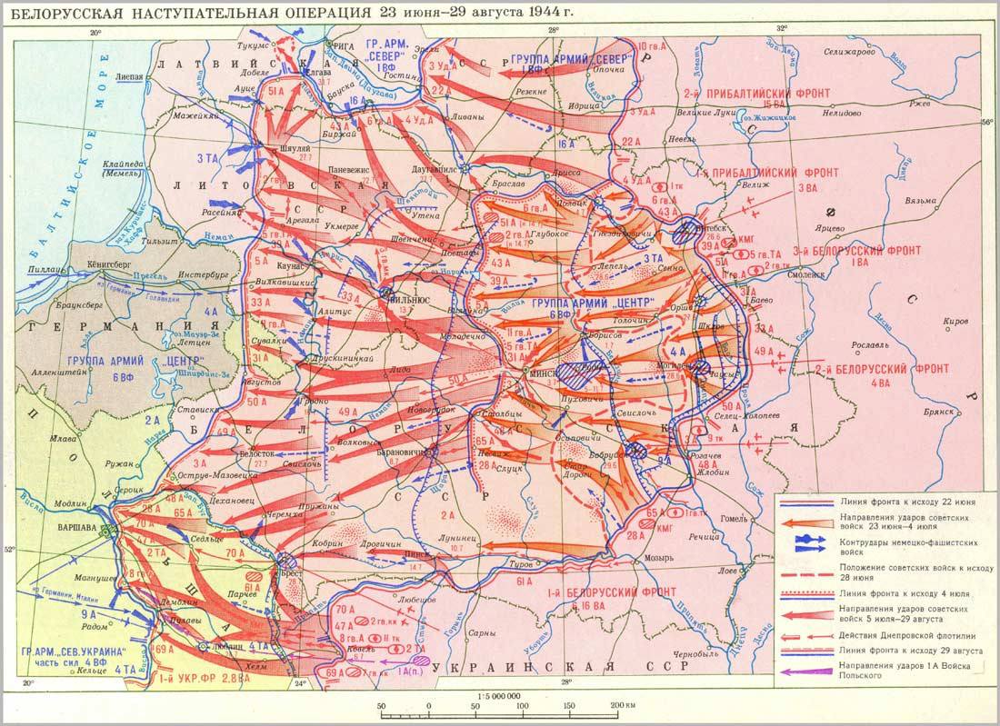

23 сентября 1943 года был освобожден первый районный центр — город Комарин.
26 сентября 1943 года — Хотимск.
26 ноября 1943 года в ходе Гомельско-Речицкой наступательной операции город Гомель был отвоеван. Он стал первым освобожденным областным центром Беларуси. Вечером Москва салютовала войскам Белорусского фронта под командованием Константина Рокоссовского 20-ю артиллерийскими залпами из 224 орудий.
7 армий вели бои за Гомельщину (это свыше 700 тыс. бойцов и офицеров Красной армии). 800 человек стало Героями Советского Союза (это более половины из тех, кто получил звезды Героя за освобождение всей Беларуси). Из 140 тыс. довоенного населения города остались лишь 15 тыс. На 7 месяцев город становится столицей Беларуси.
14 января 1944 года были взяты штурмом главные опорные пункты вражеской обороны и транспортные узлы — города Калинковичи и Мозырь.
Войска 65-й армии 20 января 1944 года освободили город Озаричи, а 61-й армии и партизаны 23 января 1944 года — город Лельчицы.
23 июня 1944 года – Шумилино.
25 июня 1944 года — Бешенковичи, Богушевск, Сенно.
26 июня 1944 года – Толочин.
Наиболее ожесточённые бои развернулись за Витебск и Оршу, превращённые в мощные узлы сопротивления. Витебск открывал дорогу в Прибалтику, а через Оршу шла кратчайшая дорога на Минск. Непосредственно освобождение Витебска было проведено 158-й стрелковой дивизией (полковник Д. И. Гончаров) 84-го корпуса 39-й армии. К вечеру 24 июня она вошла на восточную окраину Витебска со стороны Тулово, а в ночь на 26 июня вышла непосредственно к Новому мосту через реку Западная Двина. После того, как охрану моста уничтожили, саперы обнаружили, что под опорами моста заложено больше тонны взрывчатки. (За этот подвиг старшему сержанту Блохину 24 марта 1945 года присвоено звание Героя СССР). Воспользовавшись мостом, части 158-й стрелковой дивизии быстро переправились через реку и перешли на западную часть города. К 6 часам утра 26 июня Витебск при содействии 145-й дивизии (генерал-майор П. А. Диброва) 92-го стрелкового корпуса 43-й армии был полностью освобожден от противника. В Витебске было захвачено значительное число пленных, большое количество немецкого вооружения и 52 склада с военным имуществом.
27 июня 1944 года — Орша, Чашники.
28 июня 1944 года — Лепель и Могилев.
В ночь на 1 июля 1944 года соединения Красной Армии ворвались в Борисов и на рассвете освободили город. 1 июля освобождены Бегомльский, Шарковщинский, Гресский, Борисовский районы; 2 июля — Плисский, Докшицкий, Старобинский, Смолевичский, Логойский, Червенский, Куренецкий, Столбцовский районы. В ходе Минской операции войска 2-го и 1-го Белорусских фронтов освободили от немецко-фашистских захватчиков города Червень и Столбцы.
Особую роль в достижении высоких темпов наступления сыграли танковые войска. Так, совершая рейд по лесам и болотам в тылу противника, не ввязываясь в затяжные бои, 4-я гвардейская танковая бригада подполковника О.А. Лосика, входившая во 2-й гвардейский танковый корпус, опередила главные силы отступающих гитлеровцев более чем на 100 км. В ночь на 3 июля бригада по шоссе устремилась к Минску, с ходу развернулась в боевой порядок и с северо-востока ворвалась на городские окраины. Вскоре на северную окраину Минска вышли и передовые части 5-й гвардейской танковой армии.
Поздно вечером 3 июля 1944 года столица Беларуси была освобождена от оккупантов. В честь освобождения столицы Беларуси в Москве был дан салют 24 артиллерийскими залпами из 324 орудий. 2-й гвардейский танковый корпус и 4-я гвардейская танковая бригада были награждены орденом Красного Знамени. 16 танкистов за подвиги при освобождении Минска и Минской области стали Героями Советского Союза. В центре Минска на постаменте установлен танк 4-й гвардейской танковой бригады.
3 июля 1944 года освобождены Глубокский, Пуховичский, Березинский, Ильянский, Радошковичский и Островецкий районы.
Упорные бои за Полоцк продолжались 4 дня. Совинформбюро сообщало: "На подступах к городу противник соорудил глубоко эшелонированную оборонительную полосу, получившую название линии "Тигр". В самом городе немцы построили большое количество долговременных огневых точек, приспособив для этой цели каменные здания. Советские войска прорвали линию "Тигр", преодолели внутренние обводы полоцкого укрепленного района и завязали бои на улицах города. Бои продолжались всю ночь. В боях за Полоцк немцы понесли огромные потери в людях и технике". В ходе Полоцкой операции войска 1-го Прибалтийского фронта 4 июля 1944 года освободили город. В этот же день освобождены Дуниловичский, Дисненский, Миорский, Клецкий, Заславский, Руденский, Узденский, Кривичский, Мядельский и Несвижский районы.
5 июля 1944 года освобождены Ляховичский, Сморгонский, Воложинский, Туровский, Поставский районы. В ходе Вильнюсской операции войсками 3-го Белорусского фронта освобожден город Молодечно.
6 июля 1944 года освобождены Житковичский, Ивенецкий, Дзержинский, Браславский, Ленинский, Свирский; 7 июля — Ошмянский, Юратишковский, Мирский, Столинский, Ганцевичский районы.
8 июля 1944 года в ходе Белостокской операции войсками 2-го Белорусского фронта освобожден Новогрудок. В ходе наступления на барановичско-слонимском направлении войска 1-го Белорусского фронта освободили областной центр Барановичи. От оккупантов очищены Видзовский, Любчанский, Ивьевский, Кореличский, Новогрудский, Новомышский, Городищенский районы.
9 июля 1944 года в ходе Вильнюсской операции войсками 3-го Белорусского фронта освобождена Лида. Освобождены Дятловский, Давид-Городокский районы.
В ходе наступления на барановичско-брестском направлении войска 1-го Белорусского фронта при поддержке Днепровской речной военной флотилии 14 июля 1944 года штурмом овладели Пинском.
Введенные в сражение 10 июля 1944 года войска 50-й армии к 16 июля вышли на рубеж рек Свислочь и Неман, форсировали их и освободили Гродно (16 июля — правобережная часть города, 24 июля — занеманская часть).
28 июля 1944 года в ходе Люблин-Брестской наступательной операции войска 61-й армии при содействии части сил 70-й и 28-й армий освободили Брест.
Константин Константинович Рокоссовский
(1896-1968)
Советский военачальник, дважды Герой Советского Союза (1944, 1945). Кавалер ордена (1945). Единственный в истории СССР маршал двух стран: Маршал Советского Союза (1944) и Маршал Польши (1949). Командовал Парадом Победы 24 июня 1945 года на Красной площади в Москве.
Георгий Фёдорович Захаров
(1897-1957)
Советский военачальник, полководец Великой Отечественной войны. С 4 июня 1944 года — командующий войсками 2-го Белорусского фронта. Во главе фронта участвовал в Белорусской стратегической наступательной операции. 28 июля 1944 года ему присвоено воинское звание генерал армии.
Иван Христофорович Баграмян
(1897-1982)
В начале ВОВ — начальник оперативного отдела штаба Юго-Западного фронта, начальник оперативной группы Юго-Западного направления, и начальник штаба Юго-Западного фронта. С июля 1942 года командовал армией, с ноября 1943 года — войсками 1-го Прибалтийского фронта, с апреля 1945 года — войсками 3-го Белорусского фронта.
Иван Данилович Черняховский
(1907-1945)
Советский военачальник, командующий армией и фронтом во время ВОВ, дважды Герой Советского Союза (1943, 1944), генерал армии (1944). С 12 апреля 1944 года командовал войсками 3-го Белорусского фронта. Фронт под его командованием успешно участвовал в Белорусской, Вильнюсской, Каунасской и Восточно-Прусской операциях.
Белорусская наступательная операция «Багратион» — стратегическая наступательная операция Рабоче-крестьянской Красной армии (РККА) Вооружённых сил СССР против вооружённых сил нацистской Германии, проводившаяся с 23 июня по 29 августа 1944 года в ходе Великой Отечественной войны (1941—1945).
В ходе операции «Багратион» советская армия нанесла крупнейшее поражение немецкой армии за всю военную историю Германии, разгромив группу армий «Центр» вермахта. Одна из крупнейших военных операций за всю историю человечества.
К июню 1944 года линия фронта на востоке подошла к рубежу Витебск — Орша — Могилёв — Жлобин, образовав огромный выступ — клин, обращённый в глубь СССР, так называемый «Белорусский балкон». Если на Украине Красной Армии удалось добиться серии впечатляющих успехов (была освобождена почти вся территория республики, Вермахт понёс тяжёлые потери в цепочке «котлов»), то при попытке прорваться в направлении Минска зимой 1943—1944 годов успехи, напротив, были достаточно скромными. С октября 1943 по 1 апреля 1944 было произведено 11 операций по прорыву к Минску и Орше.
Предварительный этап операции — разведка боем — символически начался в третью годовщину германского нападения на СССР — 22 июня 1944 года. Как и в Отечественную войну 1812 года, одним из наиболее значимых мест сражений оказалась река Березина. Сама операция началась 23 июня. Советские войска 1-го Прибалтийского, 3-го, 2-го и 1-го Белорусского фронтов (командующие — генерал армии И. Х. Баграмян, генерал-полковник И. Д. Черняховский, генерал армии Г. Ф. Захаров, генерал армии К. К. Рокоссовский) при поддержке партизан прорвали на многих участках оборону немецкой группы армий «Центр», окружили и ликвидировали крупные группировки противника в районах Витебска, Бобруйска, Вильнюса, Бреста и восточнее Минска, освободили территорию Белоруссии и её столицу Минск (3 июля), значительную часть Литвы и её столицу Вильнюс (13 июля), восточные районы Польши и вышли на рубежи рек Нарев и Висла и к границам Восточной Пруссии.
Операция была проведена в два этапа.
Первый этап прошёл с 23 июня по 4 июля и включил в себя следующие фронтовые наступательные операции:
Второй этап прошёл с 5 июля по 29 августа и включил следующие операции: